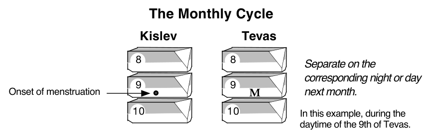
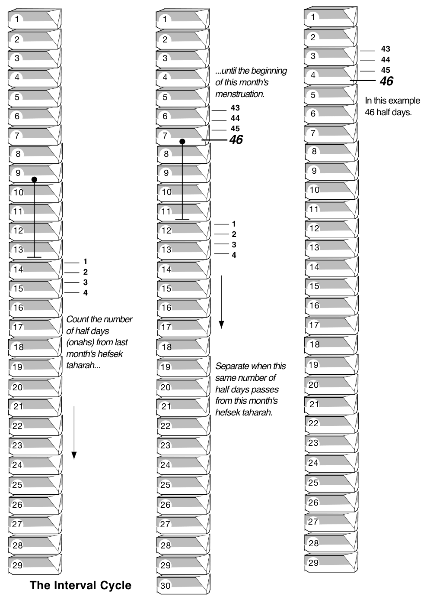
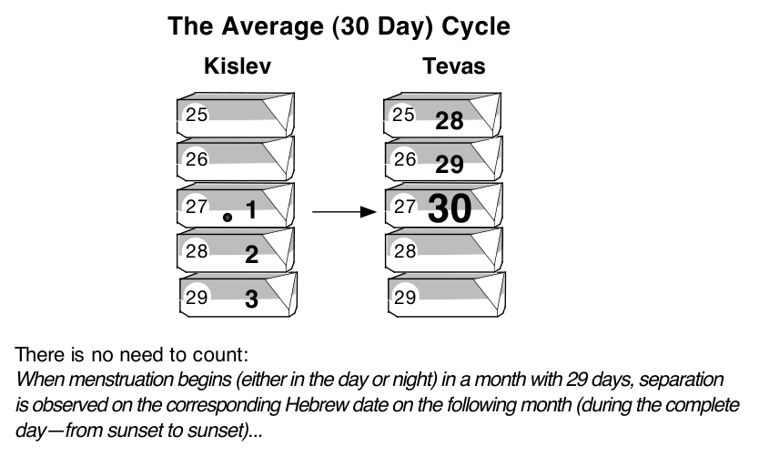
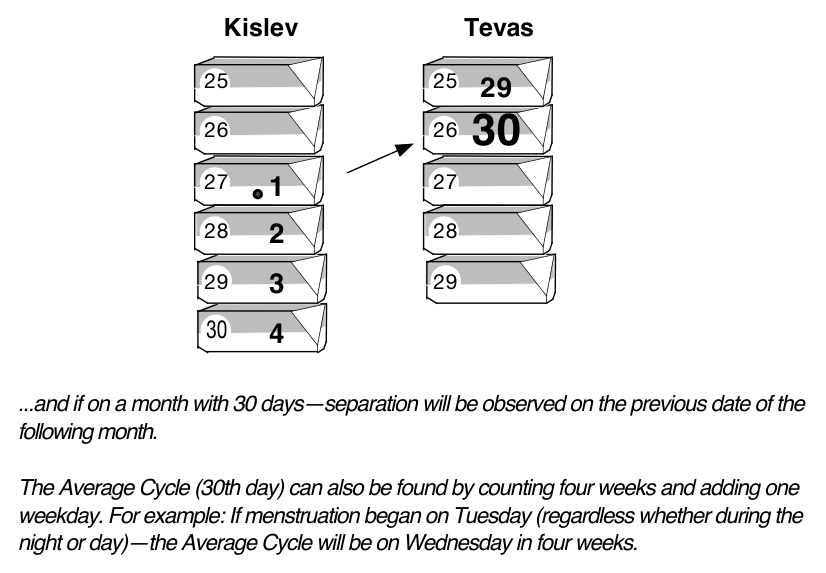
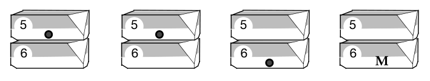
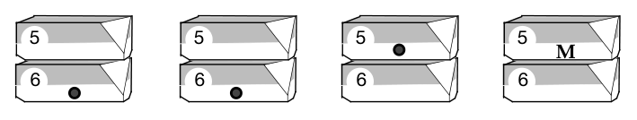
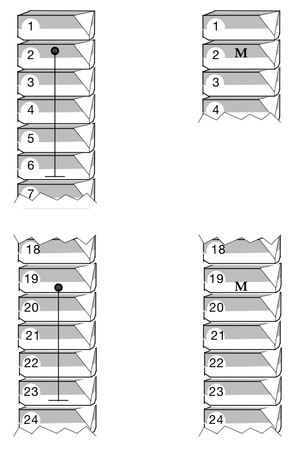

This chapter deals with the prohibition of intimacy at the time when menstruation is likely to begin. Since intimacy during the time of menstruation (until immersion) is a very serious offense against explicit Torah law, the legislation in this chapter takes on greater immediacy.
To help you to properly observe the laws laid out in this chapter it is necessary to record, on an ongoing basis, the arrival and cessation dates of the menstrual cycle. Many poskim require this to be done in written form. Beyond this, experience has consistently shown that the only way to accurately observe this concept is to write it down. This is simple and not time-consuming.
Even if the couple is unclear about all the details of how to calculate these dates, it is still important to record the onset and cessation dates, as will be explained further. The reason is that their Rabbi, mentor, or confidant will have a much simpler job of helping them organize their personal records if these dates are presented in an orderly fashion.
Although many women have an intuitive awareness of when to expect their menstruation, it is not on this intuition that the couple is to base their actions, rather they must record and project these dates according to the directives of our sages, as will be explained in this chapter.
And you shall caution the Jews to guard against their impurity.
Leviticus 15:31
Talmudic Measures
Based on the above verse, the Talmudic sages, of blessed memory, established a requirement that the husband and wife separate on the date(s) when the next menstrual period can be expected to appear1Shavuos 18:b. Shulchan Aruch Admur Hazoken 184:5.. This legislation was intended to prevent any opportunity for conjugal intimacy at the time of the anticipated appearance of menstruation.
The couple is to keep a record of the onset and cessation (as ascertained through a ) of menstrual bleeding on an ongoing monthly basis. Many poskim2Misgeres Hashulchan 155:132, Chavas Da’as, Poskim. require this information to be recorded in written form and this remains the widespread custom.
Based on this information, the date of the next anticipated menstrual period should be projected and intimacy suspended on that date. This includes kissing, hugging, affectionate touching3Shiurei Shevet HaLevy on Mehaber 184:2, Tahara Kehalacha 24:14, see footnote 28(b). Note, however, Pischei Magidim 26:1 footnote 1 and Sugah Beshoshonim 31:8 according to explanation in Be’er Eliyahu., and sleeping in the same bed4Mehaber 184:2, Shulchan Aruch Admur Hazoken 184:6. These prohibitions carry varying degrees of severity, excluded in the text for clarity.. The other restrictions observed during actual menstruation (see Chapter Four) do not apply5Tzemach Tzedek 195:1, Bodei Hashulchan 184:14..
Three Dates of Separation
The sages determined that there are three commonly found menstrual cycle patterns: the Monthly Cycle, the Interval Cycle and the Average Cycle.
Even if a woman never falls into any pattern, nevertheless she should be careful to record these three possibilities since these are the most commonly found cycles and as long as she has no established fixed cycle, she must continue to observe these.
If she discovers any regular pattern, whether similar to these or otherwise, which appears three consecutive times, it may indicate an established fixed cycle. In this case, it is advisable to confide in an orthodox Rabbi or some other knowledgeable person to clarify the ramifications. (See Appendix - Fixed Cycles for further details on this subject.) The information in this chapter refers to a woman who has not established a fixed regular cycle6Mehaber 189:1, 2..
As stated above, unless the wife has a fixed menstrual cycle, uncommon nowadays as defined by halacha, the couple must separate at the following times: The Monthly Cycle, the Interval Cycle and the Average Cycle.
The Monthly Cycle—Yom HaChodesh יום החודש
The lunar cycle affects menstruation by influencing it to begin each time on the same date of the Hebrew (lunar) month7Mehaber 189:2, Shulchan Aruch Admur Hazoken 189:5.. This is called The Monthly Cycle. In the following diagrams, the letter M refers to the Monthly Cycle.

The Interval Cycle—Veses Haflagah וסת הפלגה
This possibility represents the time interval from the end of one sighting of menstruation (hefsek tahara) until the beginning of the next8Shulchan Aruch Admur Hazoken 184:22, 186:8, 187:41, 189:3, based on Maharil and Trumas Hadeshen. See Misgeres Hashulchan 155:6.. To calculate the Interval Cycle, the wife must have the dates of one full cycle recorded.

The Average Cycle—Onah Benonis עונה בינונית
Another factor is that for most women, the menstrual period occurs on a regular thirty day cycle9Shulchan Aruch Admur Hazoken 189:1.. This is called the Average Cycle.


Separation for How Long?
In the Monthly and Interval Cycles, separation is observed either during the night half or day half of the date on which they occur10Mehaber 184:2, Shulchan Aruch Admur Hazoken 184:5.. The night half is considered to be from sunset to sunrise. The day half is from sunrise to sunset11Shulchan Aruch Admur Hazoken 184:7-9, 11, 12. There the reason: “Because the menstrual cycle depends on the solar and lunar orbits as well as the establishment of the calendar year.”.
In the Average Cycle, separation is required to last a full day12Shulchan Aruch Admur Hazoken 189:1.. That is, from one sunset to the next the following day, regardless which part of the night or day the previous menstruation began13Shulchan Aruch Admur Hazoken 189:1..
Note: Only the Hebrew dates have validity in recording the time of the anticipated menstruation.
Examination
Additionally, on these dates, the sages required the wife to perform an internal examination to see if menstruation did in fact appear on the projected date14Mehaber 184:9. Shulchan Aruch Admur Hazoken 184:28, 189:4.. This is accomplished by wrapping an examination cloth (or any soft white cloth) around her fingers, inserting it as deeply as possible, and turning it around while checking all clefts and folds15Chavas Da’as 184:12 in Beorim, Sidrei Tahara 184:3.. She then removes it and visually inspects it for any sign of blood. If discomfort is experienced, the cloth may be lightly moistened with water. It is recommended to use the commercially distributed and widely available cloths which have reliable rabbinic supervision16As suggested in Chapter Five..
The examination is performed from the recorded time of day when the last menstruation began onwards17Mehaber 184:9. Shulchan Aruch Admur Hazoken 189:4.. For example, if the last menstruation began at 10:00 a.m. this examination should be performed anytime from 10:00 a.m. until the end of the day. Or, for example, if the last menstruation began at 10:00 p.m. this examination should be performed anytime from 10:00 p.m until sunrise18Kitzur Dinei Tahara 9:6..
If there is no blood, the couple is permitted to renew marital relations, providing that the day or night span (or complete night and day span in the Average Cycle) have passed completely. Regarding the Average Cycle, the wife must explicitly state to the husband that she checked herself.
If there is blood, the wife enters the state of niddah. There is no minimum amount. Even a spot no larger than a needle point renders her niddah19Mehaber 190:33 and 190:54, Shach 190:74..
If the wife misses the examination and no blood was noticed until the end of the Monthly or Interval Cycle, relations are permitted, provided that the half day span has completely passed20Mehaber 184:9, 189:4. Darchei Teshuva 184:43, Bodei Hashulchan 184:58.. Note that this refers to a non-established cycle. Regarding the Average Cycle or a fixed cycle, however, relations21Including: kissing, hugging, affectionate contact and sleeping in the same bed, as described earlier, Bodei Hashulchan 184:59, Sidrei Tahara 184:13. are forbidden until she does actually perform an examination22Mehaber 184:9, Shulchan Aruch Admur Hazoken 189:14. even if she checked after much time has elapsed23Taz 184:12, Darchei Teshuva 184:42, Shulchan Aruch Admur Hazoken 184:29.. If she bathed following an Average Cycle or a Fixed Cycle before checking, an orthodox Rabbi expert in these laws should be consulted24Kitzur Shulchan Aruch 155:9..
Remember, for all purposes mentioned, nighttime is from sunset till sunrise. Daytime is from sunrise till sunset.
Note: In this chapter and in Appendix - Fixed Cycles, we refer only to time or date related cycles. Noting a direct connection between bodily phenomenon such as repeated hiccups, sneezing or excessive yawning and the onset of menstruation may indicate a causative relationship. In this case, it should be discussed with someone expert in this field25Mehaber 189:17 - 19 until the end, 184:12..
Stains
Although stains found on the body or on clothes26Or sheets etc., as explained in Chapter Three. may render a woman niddah, nevertheless, they are not considered factors when projecting the dates of the next menstrual cycle27Mehaber 190:54..
Even discovering a stain three consecutive times on the same date does not establish a fixed cycle28Mehaber 190:54.. Even discovering menstruation twice and a stain the third time does not establish a fixed cycle29Bodei Hashulchan 190:507..
Internal Examination
The night or day blood was discovered through an internal examination is recorded for the purpose of projecting the anticipated menstruation30Mehaber 190:54.. Furthermore, if this repeats itself three consecutive times it is considered according to the laws of fixed cycles31Bodei Hashulchan 190:513. Shiurei Shevet HaLevy on Mehaber 190:53..
The examination cloth must have been previously checked and found to be free from dirt or stains32Mehaber 190:54, Toras Hashlomim 190:59, Shulchan Aruch Admur Hazoken 190:122..
If she wipes her private place externally and finds an impure color, she does not record it to project the next anticipated menstruation33Tahara Kehalacha 24:3,.
Gynecological Examination/birth/miscarriage
If the wife becomes niddah due to a gynecological examination, giving birth, a miscarriage34Tahara Kehalacha 24:5., or due to external influences such as strenuous exercise35Mehaber 189:17., this is not recorded for the purpose of projecting the anticipated menstruation.
Menstrual bleeding even from the fourth month of pregnancy or during the twenty-four months following birth is recorded for the purpose of projecting the anticipated menstruation36Mehaber 189:33.. During these times she observes the Average Cycle37Shulchan Aruch Admur Hazoken 189:114., but does not establish a fixed cycle38Mehaber 189:33. As explained in Appendix - Fixed Cycles..
Recording the Monthly Cycle on an Ongoing Basis
As indicated by its name, the Monthly Cycle represents the relationship between the beginning of menstruation and a certain date. (In these examples, M refers to Monthly Cycle.)
- If a woman sees once or even twice on the same date, then on a later date, then the couple only need to separate on the second date the next month. For example:

Menstruation began in two consecutive months on the fifth. In the third month it began on the sixth. In this case, the fifth is disregarded and in the following month they separate on the sixth39Mehaber 189:2..
Even if she didn’t perform an internal examination on the fifth, nonetheless, since she didn’t notice menstrual bleeding, they need only separate on the sixth the next month40Mehaber 189:4. In juxtaposition to an established fixed cycle in which to cancel it she must have checked herself..
- The following is similar to the above example.

In this example menstruation began twice on the sixth. Then, unlike the previous example, the third month it began on the previous day (the fifth).
Nonetheless, the following month they separate on the fifth41Tahara Kehalacha 24:40, see discussion there..
Some opinions hold that since the sixth wasn’t passed in purity the following month they separate on the fifth and on the sixth42Kitzur Dinei Tahara..
Since this question involves a difference of opinion amongst contemporary poskim, you should clarify what your custom is with your Rabbi.
- In the next example, a date was recorded as the anticipated Monthly Cycle. Another menstruation began and she immersed in the before that date arrived. Nonetheless, when that previously recorded Monthly Cycle arrives they must separate43Ramo 189:13.. See the diagram:

In this example menstruation began during the night of the second. As a result, the Monthly Cycle for next month was set for the night of the second. Before this date arrived, menstruation began during the day of the nineteenth. In this case, when the second arrives it must still be observed the next month. Additionally, the new date (the nineteenth, during the day) must be recorded and observed, leading to two Monthly Cycle dates. Note that recalculations regarding the Interval Cycle are also necessary with the input of this new information.
- If she began menstruating on the thirtieth of the month and next month has only twenty-nine days, she needn’t observe the Monthly Cycle the following month44Tzemach Tzedek 189, see Tahara Kehalacha 24:35 and the footnote there..
- In recording the Monthly Cycle the dates remain the same, regardless of whether either month has twenty-nine or thirty days45Mehaber 189:6..
Recording the Interval Cycle on an Ongoing Basis
As its name indicates, the Interval Cycle represents the amount of time between the end of the last menstruation (ascertained through the hefsek tahara) until the beginning of the next. This time period is measured in half-day (day or night) increments called onahs46Shulchan Aruch Admur Hazoken 189:36..
- Long cycles erase shorter non-established previous cycles. For example: in our previous illustration of the Interval Cycle, we recorded a cycle of 46 half day periods. If the next cycle were 47 half day periods or longer, it would erase and displace the need to consider the old cycle of 46.
- On the other hand, shorter cycles do not erase longer non-established previous cycles. In the previous example, if the next cycle was 45 half day periods [or shorter], then the following month they would separate both on the 45th and on the 46th half day47Shulchan Aruch Admur Hazoken 189:43, 189:44 “klolo shel davar.”. However, now the woman begins recounting from the hefsek tahara of this last menstruation. The reason is that, as its name indicates, the Interval Cycle represents the time from the end of the last menstruation to the onset of the next anticipated one. Therefore, interrupting one counting necessitates a new count.
Recording the Average Cycle on an Ongoing Basis
The Average Cycle represents the time cycle most women pass through from the beginning of the last menstruation to the beginning of the next menstruation.
- Therefore, if a date was recorded as the thirtieth day from the last onset, but menstruation appeared before that date, a new count is made from this new sighting48Sidrei Tahara 189:13..
For example: The last sighting was on the 27th. Therefore, the 27th was recorded for the following month as the thirtieth day (Average Cycle). In the meantime menstruation appeared on the 15th. Therefore, a new counting is begun starting from the 15th. The thirtieth day from the 15th is the new Average Cycle, which completely replaces the old one.
- Discovering a stain does not require a new counting. For example, the 15th of Nissan was recorded as the Average Cycle; finding a stain on the 28th of Adar does not necessitate a new counting or cancelling observance of the 15th of Nissan49Bodei Hashulchan 190:505..
- Even if a woman does not usually see menstruation on the thirtieth day; or does not usually see until after the thirtieth day, as long as she has not established a fixed cycle, she must observe the Average Cycle50Chavas Da’as 186:3 and 189:12, end of Sidrei Tahara 189:20. since this is the most commonly found cycle.
Regarding a woman with an established fixed cycle see Appendix - Fixed Cycles.
General
- A doubt whether the time she discovered menstruation was before or after sunrise requires separation the following month during both night and daytimes. So too, if a woman has a doubt whether the time she discovered menstruation was before or after sunset, they must separate the following month during the daytime and the nighttime.
For example: Around sunrise time she discovered menstruation had begun but it is unclear whether this time was before sunrise (which is considered nighttime) or after sunrise (which is considered daytime). In such a case, the following month they must separate during the corresponding nighttime as well as the daytime51Shulchan Aruch Admur Hazoken 184:19. If upon awakening she found menstruation had begun, she needn’t suspect it had already appeared the previous night. Rather, she assumes it began during the onah it was found. Eshkol 25, Bodei Hashulchan 184:31..
- The dates of the anticipated menstruation are determined according to the time when the last menstruation began. If it began during the night, separation will be observed during the night. If it began during the day, separation will be observed during the day. This refers to a normal menstruation which lasts a few days52Mehaber 184:6.. Exception: If the menstruation began during the nighttime (i.e. before sunrise) and extended only a few hours into the daytime53Uncommon., then the following month they separate during the nighttime and that amount of time into the following day. When that amount of time has passed, she checks and if this internal examination is clean, she is permitted.
For example: The last menstruation began during the night and extended until 10:00 a.m. On the anticipated date, separation is observed during the night into the following day. At 10:00 a.m. she checks and if this examination is clean, she is permitted.
So too, if menstruation began during the daytime (before sunset) and lasted a few hours into the night, the following month they separate during the daytime and the following night for the same amount of time during which the previous month’s menstruation continued. When that amount of time has passed, she checks. If this internal examination is clean, she is permitted54Mehaber 184:5, Shulchan Aruch Admur Hazoken 184:20..
The reason for this is that, as described above, separation on the date of the anticipated menstruation corresponds to the last menstrual beginning. This menstruation lasted only a few hours into the following day (or night). This whole time is therefore considered its beginning55Shulchan Aruch Admur Hazoken 184:22..